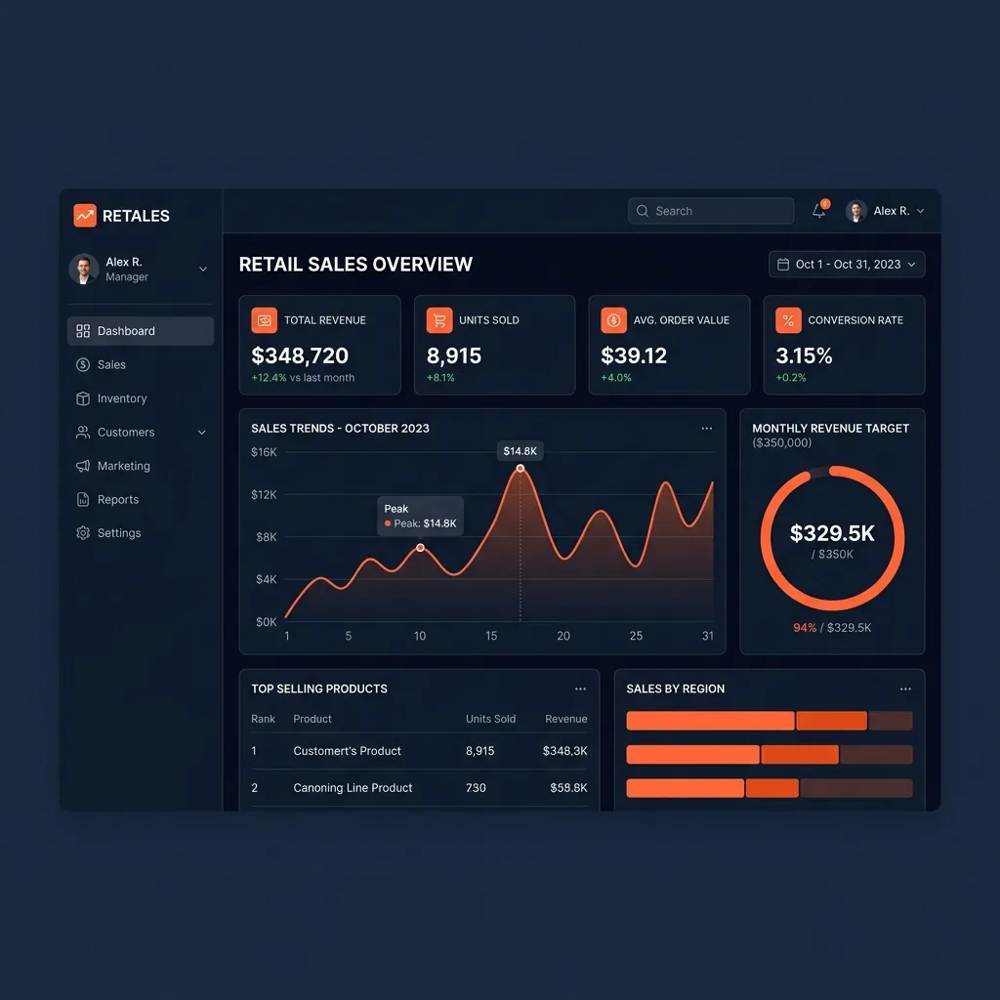
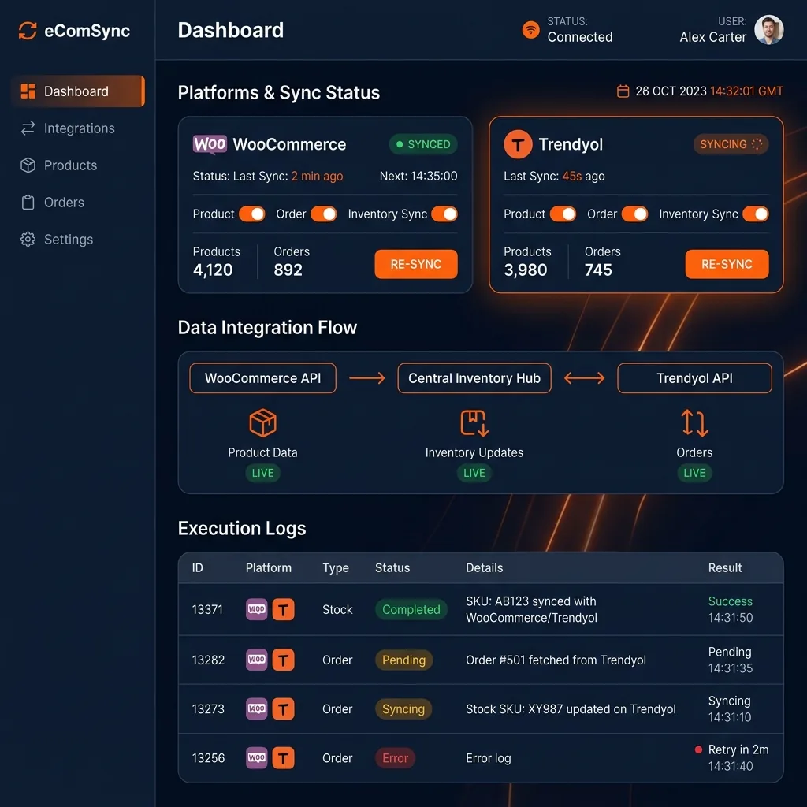
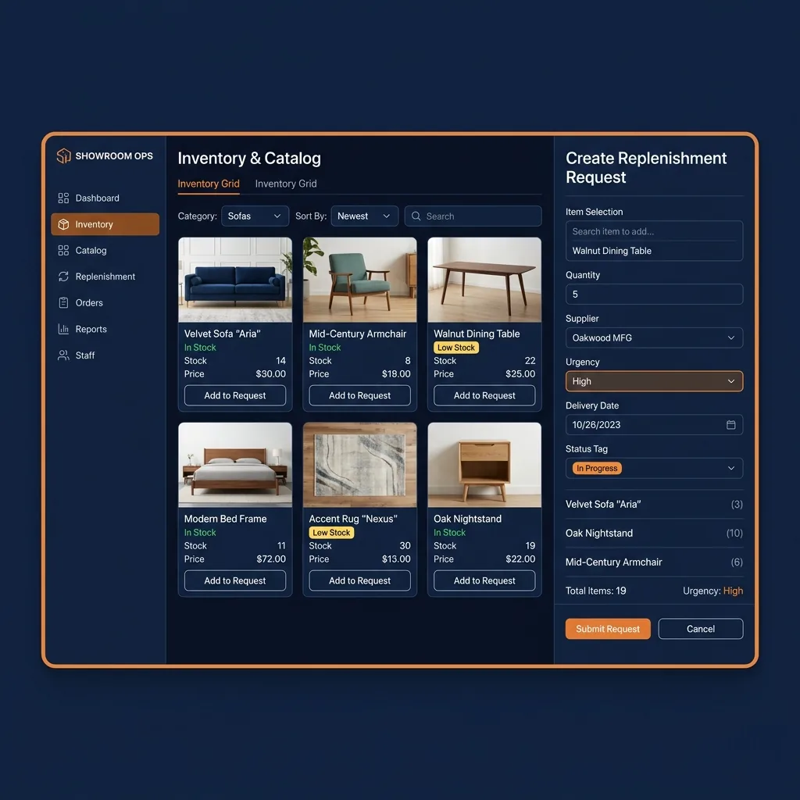
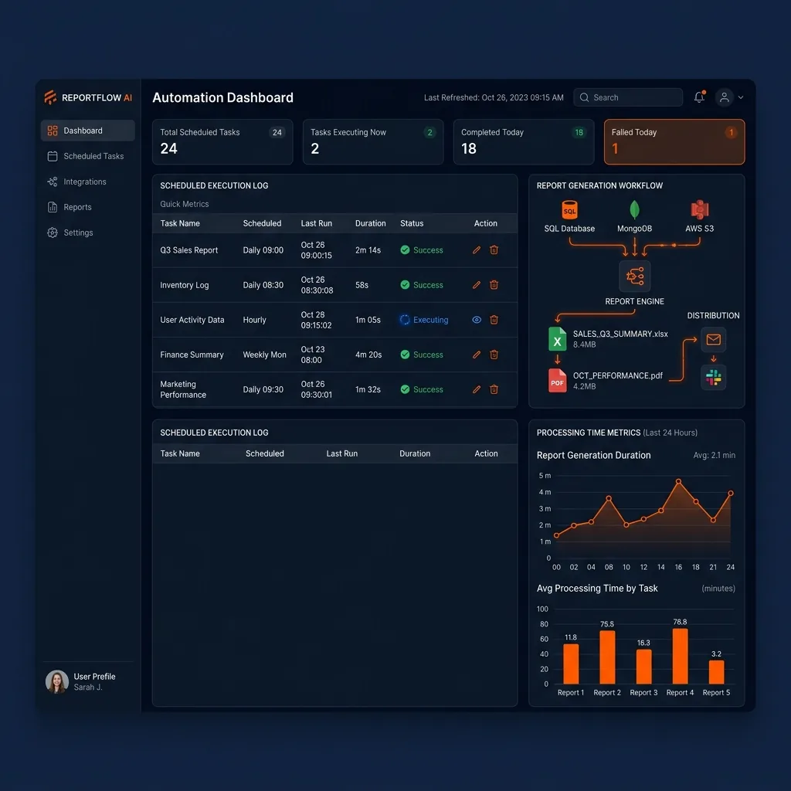
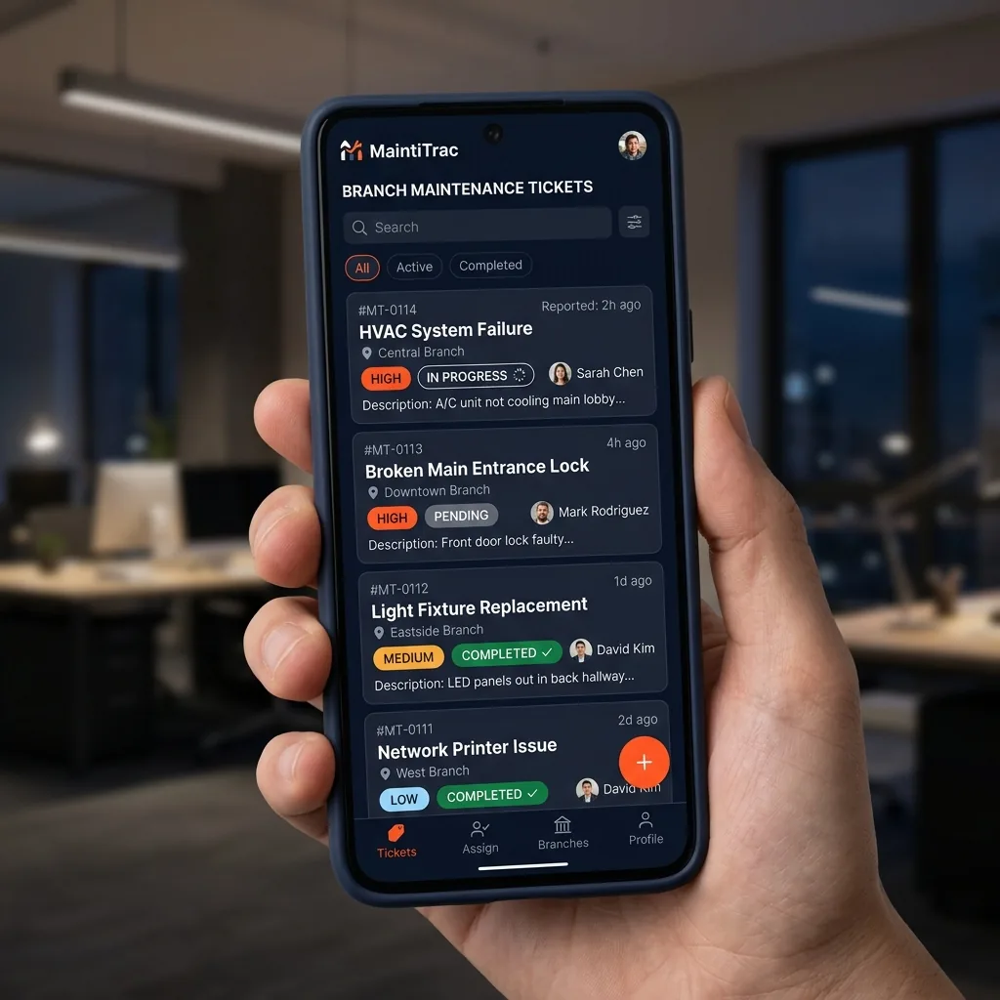
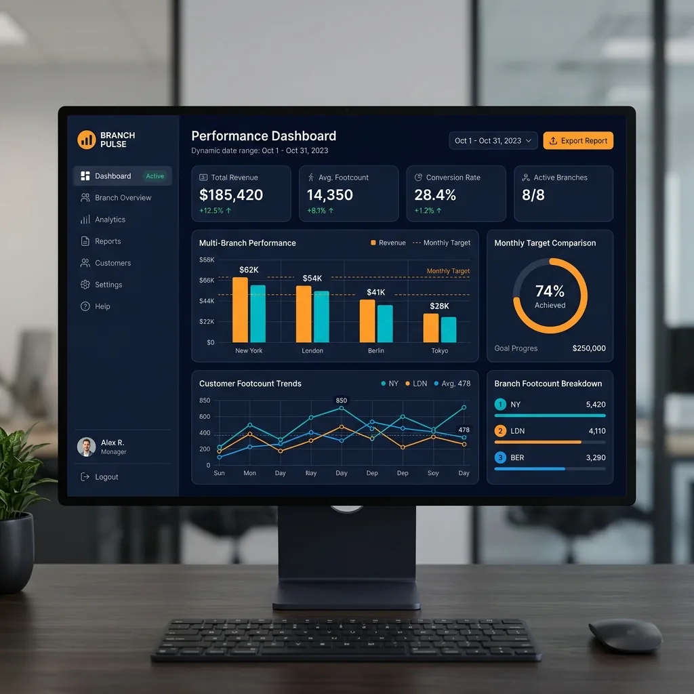

أساعد الإدارات على ربط المبيعات والمخزون والزوار والتقارير ونظام الـ ERP في نظام واحد واضح، يقلّل العمل اليدوي ويمنح الإدارة رؤية يومية دقيقة لأداء الفروع.
مهندس حلول تقنية متخصص في ربط الأنظمة وأتمتة العمليات للمؤسسات الكبرى
Alaa Wafaie
«التقنية ليست لاستعراض العضلات البرمجية، بل هي وسيلة لتحقيق أرقام أفضل، توفير الوقت، وتقليل الصداع التشغيلي لأصحاب الأعمال.»
أهلاً بك، أنا علاء وفائي. على مدار أكثر من 4 سنوات، تخصصت في قيادة التحول الرقمي وتصميم البنى التحتية البرمجية للأعمال في قطاع التجزئة والمبيعات المتعددة. شغفي هو أتمتة المهام المعقدة والمملة وحلها برمجياً لتحدث تلقائياً.
ركزت خلال مسيرتي على تطوير أدوات التحليلات الفورية ولوحات التحكم التي تربط أنظمة المخازن وERP والـ POS وأجهزة قياس الزوار، مما يعطي الإدارة رؤية شفافة تمكنها من زيادة الأرباح وتخفيض التكاليف التشغيلية.
أنظمة برمجية ذكية مصممة خصيصاً لتلبية المتطلبات التشغيلية لقطاعك التجاري وتحقيق الكفاءة
أتمتة جرد المستودعات، تتبع حركة الزوار لحظياً، وحساب معدلات تحويل الفروع لدعم القرارات البيعية وتوزيع الكادر البائع.
ربط تلقائي ثنائي الاتجاه بين منصات البيع (سلة، ووكومرس) مع أنظمة المخازن وشركات الشحن لترحيل الطلبات والمخزون.
تجميع مبيعات نقاط البيع المتعددة لحظياً من الجوال، ومراقبة تكاليف المواد (Food Cost) وهدر المكونات تلقائياً.
أتمتة الموافقات وسلسلة الصلاحيات، تتبع المشاريع والمهام التشغيلية، وبناء بوابات الخدمة الذاتية للفريق والعملاء.
حلول برمجية ذكية مفصلة خصيصاً لتناسب احتياجات شركتك وتزيد من كفاءتها
شاشة تحكم واحدة تجمع مبيعات فروعك، أداء موظفيك، وأعداد الزوار لحظة بلحظة، بدلاً من تجميعها يدوياً من ملفات متعددة.
أتمتة التقارير الدورية (مبيعات، مخزون، تشغيل) لتصلك في دقائق معدودة بدلاً من ساعات عمل يدوية، مع تقليل أخطاء النسخ والتجميع.
ربط متجرك (سلة، ووكومرس، ترينديول) بنظام المستودعات وERP لتحديث المخزون والطلبات تلقائياً وتقليل البيع بالخطأ.
جعل أنظمتك المختلفة (ERP Dynamics 365, POS, GoFrugal) تتحدث مع بعضها كأنها نظام واحد دون تكرار لإدخال البيانات.
بناء أدوات داخلية لطلب البضائع للفروع، طلبات الصيانة، تتبع المهام، وإدارة الموافقات حسب صلاحيات كل موظف.
إرسال إشعارات تلقائية عبر واتساب لفريقك أو عملائك: تأكيد طلب، تنبيه انخفاض مخزون، أو تقارير مبيعات سريعة.
تزويد نظامك بمساعد ذكي يجيب على أسئلة المدراء حول أرقام المبيعات والتقارير بلغة طبيعية، مع استخلاص البيانات فوراً.
تقييم الوضع التقني الحالي لشركتك، ووضع خطة عملية خطوة بخطوة للبدء في رقمنة وأتمتة العمليات بنجاح وبأقل التكاليف.
منهجية واضحة ومباشرة تضمن الحصول على أفضل النتائج بأقصى سرعة
نجلس معاً لنفهم طبيعة عملك الحالي والعقبات التي تبطئ تشغيلك وتكلفك وقتاً وجهداً.
أقوم بتصميم وتخطيط بنية النظام المقترح وعرض الفوائد والنتائج المتوقعة بالأرقام والوقت.
أكتب الأكواد وأربط قواعد البيانات بأنظمتك الحالية بدقة ومع مراعاة أمان البيانات والخصوصية.
بعد التسليم، أظل على تواصل لدعم النظام وضمان استمراريته وتدريب فريق عملك على استخدامه.
أمثلة حية على أنظمة وحلول قمت ببنائها وتشغيلها بنجاح مع إبراز أثرها الفعلي على الأعمال

نظام تحليلات متكامل يربط مبيعات 52 فرعاً لحظة بلحظة مع ربط ERP (Dynamics 365) وأجهزة قياس الزوار ومعدلات التحويل التشغيلية.
صعوبة وتأخر تجميع بيانات المبيعات وعدد الزوار يدوياً من 52 فرعاً، مما تسبب في اتخاذ قرارات متأخرة ونسبة أخطاء بشرية عالية في ترحيل التقارير التشغيلية اليومية.
بناء مستودع بيانات PostgreSQL يربط نظام ERP (Dynamics 365) وأنظمة الكاشير وأجهزة قياس الزوار V-Count عبر ETL pipelines، وتطوير لوحات BI لحظية مع مساعد ذكي يستجيب لأسئلة المدراء بلغة طبيعية.
توفير ما يقارب 15 ساعة عمل أسبوعياً للإدارة في تجميع التقارير، وانخفاض ملحوظ في أخطاء الترحيل اليدوي، مع تحسّن في معدل تحويل الزوار نتيجة توزيع الكادر بناءً على أوقات الذروة.
تجميع بيانات 52 فرعاً يدوياً، وتأخر في القرار.
لوحة واحدة لحظية لكل الفروع تدعم القرار اليومي.

نظام ربط ومزامنة ثنائي الاتجاه يربط المتاجر الإلكترونية (Trendyol, WooCommerce) مع نظام المستودعات والـ ERP للتحديث اللحظي للطلبات والمخزون.
فروقات متكررة في كميات المخزون وتأخر مزامنة الطلبات الواردة من متجر Trendyol وWooCommerce مع المستودعات، مما تسبب في إلغاء طلبات من العملاء وتأخر الشحن.
تطوير محرك ربط (Sync Engine) بلغة Python يراقب المخزون بشكل لحظي ويحدث الكميات ثنائي الاتجاه، مع جدولة سحب الطلبات وترحيلها تلقائياً للـ ERP وإنشاء سجل تدقيق (Audit Log) للعمليات.
تسريع معالجة وشحن الطلبات بحدود 60%، وانخفاض كبير في إلغاء الطلبات بسبب نفاد الكميات، مع توفير ما يقارب 20 ساعة عمل أسبوعياً من المزامنة اليدوية.
فروقات مخزون متكررة وإلغاء طلبات وتأخر شحن.
مزامنة تلقائية ثنائية الاتجاه بين المتجر والمخزون.

تطبيق ويب داخلي يربط فروع الشركة لإدارة طلبات البضائع والمستودعات ومتابعة أعمال صيانة المعارض بنظام صلاحيات صارم.
فوضى وتأخير في تسجيل طلبات توريد البضائع وأعطال الصيانة من الفروع إلى الإدارة العامة، والتي كانت تتم عبر واتساب دون توثيق أو تتبع للصلاحيات والتكاليف.
تصميم وبناء بوابة ويب داخلية باستخدام React وSupabase وقاعدة بيانات PostgreSQL، تتيح لمدراء المعارض إرسال الطلبات وصور الأعطال مع لوحة تحكم للإدارة للموافقات وتوزيع المهام حسب الصلاحيات (RBAC).
تسريع تجهيز وإرسال بضائع المعارض بحدود 75%، وتوثيق طلبات وتكاليف صيانة الفروع في مكان واحد مع سجل كامل للموافقات التشغيلية.
طلبات وأعطال عبر واتساب دون توثيق أو صلاحيات.
بوابة موحّدة بطلبات موثّقة وصلاحيات واضحة.

نظام مخصص لسحب البيانات وتنظيفها وتوليد التقارير اليومية بصيغ Excel و PDF وجدولتها وإرسالها لمدراء المناطق والمدراء التنفيذيين تلقائياً.
استهلاك موظفي التحليل المالي 4 ساعات يومياً في سحب البيانات من عدة قواعد بيانات، وتنظيفها على إكسيل لتوليد التقارير اليومية وإرسالها بالإيميل للمسؤولين.
تطوير سكربتات أتمتة بالبايثون مع VBA وPower Query تسحب البيانات تلقائياً عند الساعة 6 صباحاً، تقوم بتنظيفها وتوليد ملفات Excel وPDF تفاعلية وإرسالها عبر بريد مجدول تلقائياً للمسؤولين.
تقليص زمن إعداد وإرسال التقارير من حوالي 4 ساعات إلى دقائق معدودة تلقائياً، وتقليل واضح في أخطاء النسخ والحساب اليدوي.
4 ساعات يومياً في سحب البيانات وتجهيز التقرير.
تقرير جاهز ومُرسل تلقائياً خلال دقائق.

نظام داخلي متكامل مخصص لتسجيل وتتبع تذاكر الصيانة للأعطال التكنولوجية والأجهزة داخل المعارض مع نظام صلاحيات للمدراء وفريق الصيانة.
صعوبة متابعة التذاكر والأعطال التقنية في الفروع وتحديد المسؤول عنها، مع غياب مؤشرات لقياس سرعة استجابة فريق الدعم لحل المشكلات التقنية.
تطوير نظام تذاكر داخلي تفاعلي (React & Firebase) يسمح للفروع برفع التذاكر وتحديث حالتها لحظياً، مع إرسال إشعارات تلقائية عبر البريد عند تحديث حالة الطلبات وتوليد تقارير أداء دورية للفريق.
خفض متوسط زمن إغلاق التذاكر وحل الأعطال بحدود 50%، مما قلّل ساعات توقف العمل في نقاط البيع وحسّن متابعة أداء فريق الصيانة.
أعطال بلا تتبع ولا مؤشرات لسرعة الاستجابة.
تذاكر مُتتبَّعة بحالة ومسؤول ومؤشرات أداء.

برنامج سحابي جاهز (White-label Dashboard) مخصص لشركات التجزئة والمحلات الكبرى، قابل للتثبيت السريع والربط مع أي نظام كاشير لعرض المبيعات اليومية والشهرية وأداء الكادر البائع فوراً.
الشركات الناشئة وسلاسل التجزئة الصغيرة لا تمتلك الميزانية الكافية لشراء وتدريب موظفيها على أنظمة BI معقدة ومكلفة مثل Power BI أو Tableau، مما يتركها دون رؤية واضحة لأدائها.
تصميم باقة برمجية جاهزة (Dash Analytics) خفيفة الوزن باستخدام Vanilla JS وBootstrap تدعم العمل دون إنترنت (PWA)، وتتصل بقاعدة بيانات مبيعات المحل لتوليد لوحة متابعة فورية وتصدير تقارير PDF بكبسة زر.
تثبيت وتشغيل النظام للعميل خلال ساعات قليلة، وتقليل كبير في الوقت المستهلك يومياً في تجميع الحسابات يدوياً من صاحب المحل.
لا رؤية واضحة للمبيعات بدون أنظمة BI مكلفة.
لوحة جاهزة خفيفة تعرض المبيعات والأداء فوراً.
أنظمة جاهزة قابلة للتكييف مع شركتك، كل واحد منها يحلّ مشكلة تشغيلية متكررة في الفروع
يجمع مبيعات الفروع وأداء الكادر وأعداد الزوار في لوحة واحدة محدّثة يومياً.
تجميع الأرقام يدوياً من عدة ملفات وتأخر وصولها للإدارة.
مدراء التجزئة ومدراء المناطق متعددي الفروع.
لوحة ويب + مؤشرات تحقيق التارجت والتحويل + تصدير PDF.
يسحب البيانات، ينظّفها، يولّد تقارير Excel/PDF ويرسلها تلقائياً في موعد محدد.
ساعات يومية تضيع في تجهيز التقارير عبر Excel وواتساب.
فرق التحليل المالي والإدارة التشغيلية.
تقارير مجدولة تصل للبريد أو واتساب دون تدخل يدوي.
بوابة يطلب منها الفرع البضائع والاحتياجات، مع موافقات حسب الصلاحيات.
طلبات الفروع المبعثرة عبر واتساب دون توثيق ولا متابعة.
إدارات المستودعات والتشغيل في الشركات متعددة الفروع.
طلبات موثّقة بحالة وسجل موافقات ولوحة متابعة للإدارة.
يسجّل أعطال الأجهزة والفروع كتذاكر بحالة ومسؤول وزمن استجابة.
أعطال لا يُعرف من يتابعها ولا كم تأخذ حتى تُحل.
فرق الصيانة والدعم التقني للفروع ونقاط البيع.
نظام تذاكر بإشعارات وتقارير عن سرعة حل الأعطال.
جرّب بنفسك كيف تحسب الأنظمة أداء فروعك ومعدلات النمو والتحويل يومياً لتتخذ قرارك التشغيلي
هذه الآلة الحاسبة التفاعلية مبنية على المعادلات والمنطق البرمجي الذي قمت بتصميمه في مشاريع لوحات التحكم الكبرى. أدخل أرقاماً افتراضية لترى كيف تترجم البيانات التشغيلية لمؤشرات واضحة تمكنك من متابعة تحقيق أهدافك بدقة.
أراء وانطباعات أصحاب الشركات والمدراء الذين عملت على تطوير مشاريعهم
* مسميات وظيفية لأصحاب القرار الذين عملت معهم، مع الحفاظ على خصوصية الشركات.
"ربط المهندس علاء متجرنا مع المخازن ونظام ERP وأتمت معالجة الطلبات. وفّر علينا وقتاً تشغيلياً كبيراً وقلّل أخطاء تجهيز الطلبات."
"لوحة المبيعات التي بناها أتاحت لنا متابعة أداء الفروع ونِسب تحقيق التارجت من الجوال، بدل انتظار تقارير نهاية اليوم."
"بوابة طلبات الفروع نظّمت توريد البضائع، وصار كل طلب موثّقاً وله حالة واضحة، بدل رسائل الواتساب المتفرقة."
إجابات واضحة ومباشرة على استفسارات أصحاب الشركات والمدراء التنفيذيين
أرسل لي مثالاً من العملية، وسأعطيك تصوراً عملياً لكيف يمكن تحويلها إلى نظام أو أتمتة.
أرسل تفاصيل مشروعك أو حدد موعد استشارة مجانية وسأتواصل معك في أقرب وقت
إذا كنت تفضل التواصل السريع والمباشر، يمكنك استخدام القنوات التالية:
الموقع الحالي:
جدة، المملكة العربية السعوديةالبريد الإلكتروني:
wafaiealaa@gmail.comلينكد إن:
linkedin.com/in/alaa-wafaie